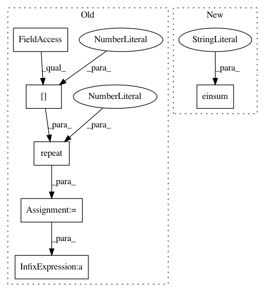

eb52df01d6fa9beb97d367ff091d32186c91ea95,geomstats/geometry/poincare_ball.py,PoincareBallMetric,log,#PoincareBallMetric#Any#Any#,144
Before Change
point = gs.to_ndarray(point, to_ndim=2)
if base_point.shape[0] == 1:
base_point = gs.repeat(base_point, point.shape[0], axis=0)
if point.shape[0] == 1:
point = gs.repeat(point, base_point.shape[0], axis=0)
add_base_point = self.mobius_add(-base_point, point)
norm_add = gs.to_ndarray(gs.linalg.norm(
add_base_point, axis=-1), 2, -1)
norm_add = gs.repeat(norm_add, base_point.shape[-1], -1)
norm_base_point = gs.to_ndarray(gs.linalg.norm(
base_point, axis=-1), 2, -1)
norm_base_point = gs.repeat(norm_base_point,
base_point.shape[-1], -1)
log = (1 - norm_base_point**2) * gs.arctanh(norm_add)\
* (add_base_point / norm_add)
mask_0 = gs.isclose(norm_add, 0.)
log[mask_0] = 0
After Change
base_point, axis=-1), axis=-1)
log = (1 - norm_base_point**2) * gs.arctanh(norm_add)
log = gs.einsum("...i,...j->...j", log, (add_base_point / norm_add))
mask_0 = gs.isclose(gs.squeeze(norm_add), 0.)
if(gs.any(mask_0)):
log[mask_0] = 0
In pattern: SUPERPATTERN
Frequency: 4
Non-data size: 6
Instances
Project Name: geomstats/geomstats
Commit Name: eb52df01d6fa9beb97d367ff091d32186c91ea95
Time: 2020-04-09
Author: gerald@pop-os.localdomain
File Name: geomstats/geometry/poincare_ball.py
Class Name: PoincareBallMetric
Method Name: log
Project Name: geomstats/geomstats
Commit Name: 656e5e7d6b75cf0a7fad757a7ca59174c66e85f0
Time: 2020-04-09
Author: gerald@pop-os.localdomain
File Name: geomstats/geometry/poincare_ball.py
Class Name: PoincareBallMetric
Method Name: retraction
Project Name: geomstats/geomstats
Commit Name: ba9524030335193a49f0745be632fbe229e7614d
Time: 2020-04-09
Author: gerald@pop-os.localdomain
File Name: geomstats/geometry/poincare_ball.py
Class Name: PoincareBallMetric
Method Name: log
Project Name: geomstats/geomstats
Commit Name: c8e7a4ff3fb3fbc14476876b6087a68c6d56ab45
Time: 2020-04-09
Author: gerald@pop-os.localdomain
File Name: geomstats/geometry/poincare_ball.py
Class Name: PoincareBallMetric
Method Name: retraction